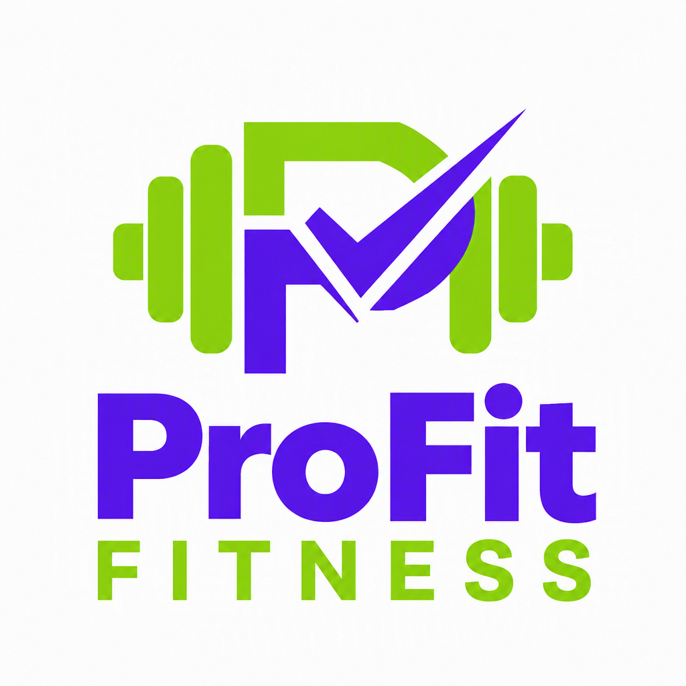

ProFit Fitness, a fictional gym, ran on disconnected processes. Member registration and payments were hard to track, class bookings clashed, the juice bar's stock and sales were poorly managed, equipment maintenance wasn't properly recorded, and management couldn't easily get reports. The gym needed one central database to bring this together.
I wrote the project documentation, bringing together everything the team produced into one document. I created half of the dependency diagrams, and a teammate and I made the demonstration video of the project.
We worked through three phases of the Database Life Cycle. In the initial study we analysed the business requirements, stakeholders and scope. In the design phase we wrote detailed business rules, drew an entity relationship diagram, identified entities, keys and relationships, created dependency diagrams, normalised the design to Third Normal Form (3NF) and developed relational schemas. In the implementation phase we built the database in Oracle SQL with 19 tables, keys, constraints, indexes and four views, populated it with sample data, and wrote more than 30 queries using joins, subqueries, aggregate functions and date functions, as well as INSERT, UPDATE and DELETE statements.
The database covers memberships and payments, class bookings, employees, facilities and equipment maintenance, juice bar products and inventory, suppliers, and management reports on revenue, bookings, membership trends and stock.
We used dependency diagrams to check the design and normalised it to Third Normal Form before building the tables.
A working 19-table Oracle SQL database with four views, indexes and more than 30 queries, which earned 84% as a final project.
← Back to projects